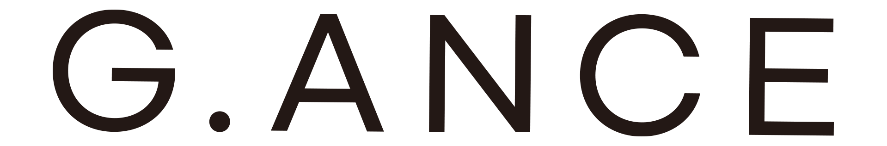
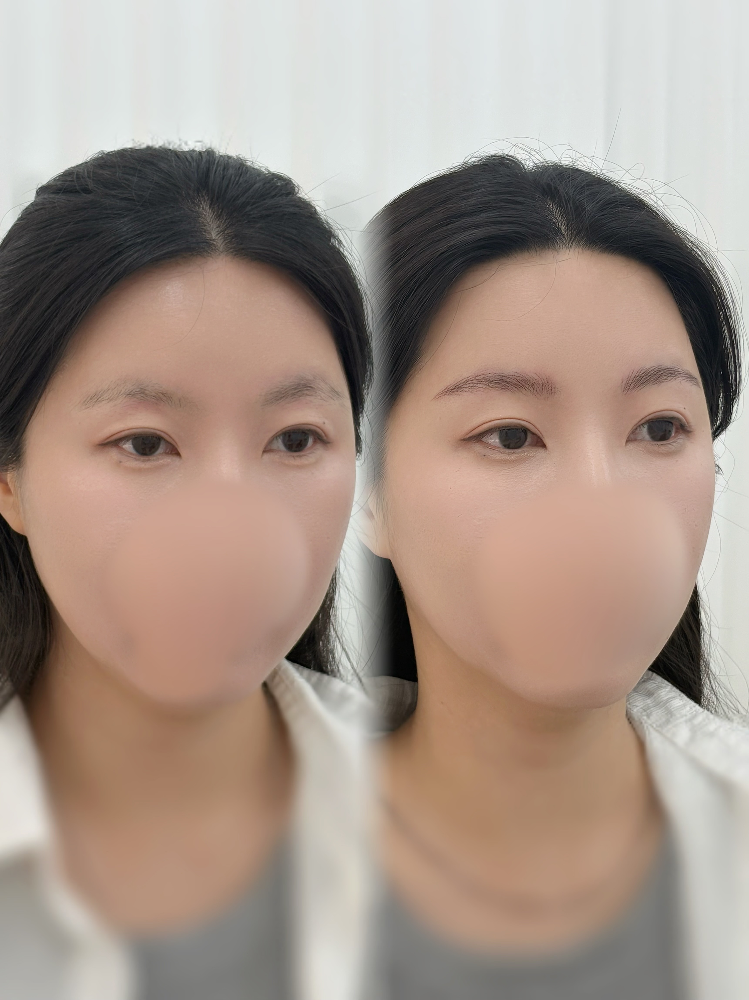
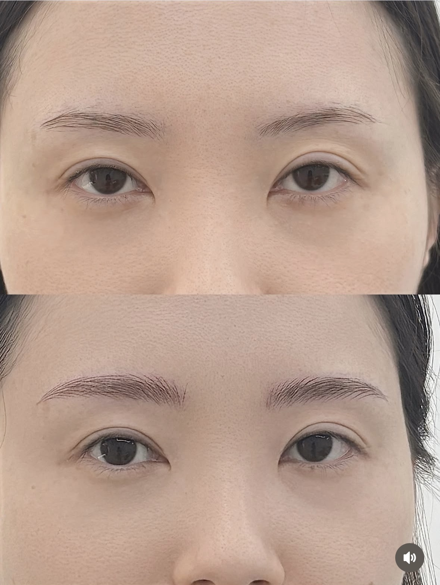
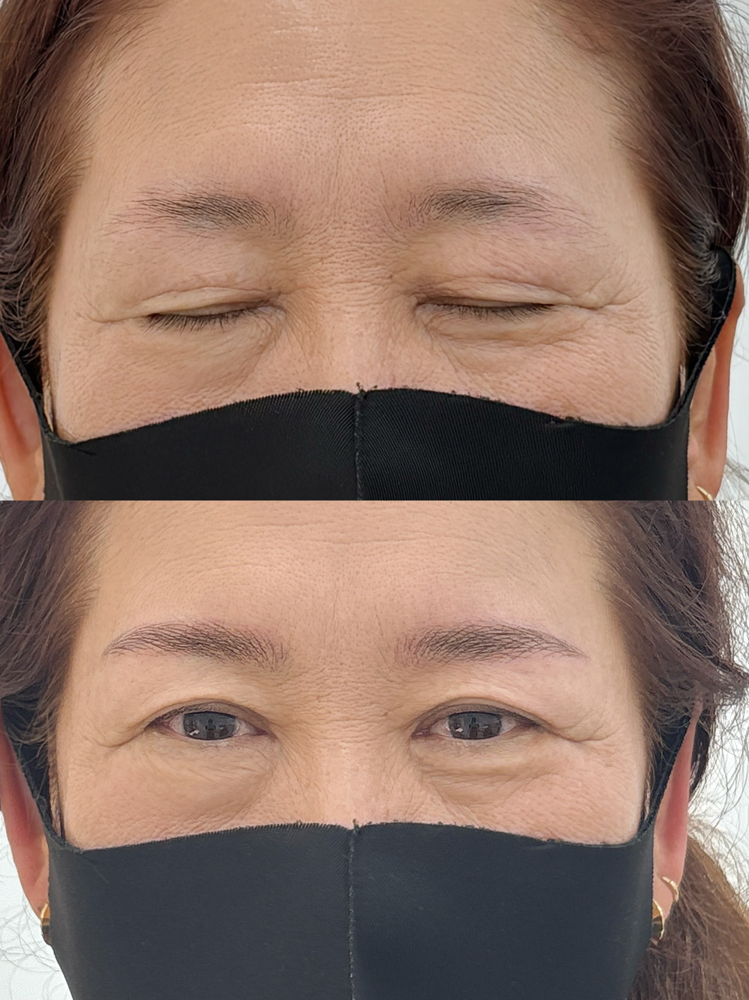

자연눈썹
NATURAL BROW가느다란 선으로 눈썹의 결을 표현하는 디자인.

RESERVATION ↗G.ANCE · PERSONAL BROW DESIGN
얼굴을 닮은 선, 취향을 담은 결.
지앙스에서 나에게 어울리는 눈썹을 만나보세요.
광주 첨단 · 1:1 퍼스널 눈썹 디자인

01 — THE G.ANCE WAY
유행하는 모양보다 먼저,
당신의 얼굴과 이야기를 봅니다.
평소의 표정, 좋아하는 분위기, 눈썹을 그릴 때의 고민까지.
지앙스는 1:1 상담을 통해 얼굴형과 이목구비, 생활패턴에 맞는 눈썹 디자인을 함께 찾아갑니다.
상담부터 디자인까지, 이지원 원장이 직접 함께합니다.
02 — DESIGN JOURNAL

눈썹 모양과 결의 표현을 살펴보는 디자인 기록.

개인의 눈썹 형태를 바탕으로 한 작업 사례.
지앙스에서 제공한 실제 작업 자료입니다. 결과는 개인에 따라 다를 수 있습니다.
03 — BROW COLLECTION
디자인의 시작은, 나를 알아가는 상담.
가느다란 선으로 눈썹의 결을 표현하는 디자인.
눈썹 한 올 한 올의 흐름과 결 표현을 살피는 디자인.
눈썹 화장처럼 부드러운 음영과 그라데이션을 표현하는 디자인.
결 표현과 음영 표현을 함께 사용하는 디자인.
나에게 맞는 방식과 현재 가격은 예약 페이지 또는 상담에서 확인해 주세요.
네이버 예약하기LET’S TALK ABOUT YOUR BROWS
작은 고민부터 편하게 이야기해 주세요.
참고 사진은 마음에 드는데, 내 얼굴에도 어울릴지 고민이라면.
좋아하는 분위기와 평소의 눈썹 모양을 함께 살펴봐요.
가느다란 결 표현이 좋은지, 부드러운 음영을 더하고 싶은지.
실제 디자인 기록을 보며 원하는 표현을 이야기해 주세요.
이전에 받은 작업이나 남아 있는 색이 있다면.
작업 이력과 현재 상태를 먼저 알려주시면 상담에 도움이 됩니다.
A CONVERSATION BEFORE A DESIGN
원하는 분위기와 평소의 눈썹 고민을 이야기합니다.
얼굴형, 이목구비와 기존 눈썹을 바탕으로 디자인을 상담합니다.
진행 방식과 총 비용, 예약·리터치 조건 및 이용 후 관리 안내를 확인한 뒤 결정합니다.
04 — BEFORE WE MEET
원하는 분위기와 평소 눈썹 고민을 알려주세요. 얼굴형과 이목구비, 기존 눈썹을 함께 살펴 1:1 상담으로 디자인을 제안합니다.
지앙스의 서비스 안내에서는 모두 결을 표현하는 디자인으로 소개합니다. 도구와 구체적인 표현 방식, 나에게 적합한 방식은 실제 작업 예시와 함께 상담에서 확인해 주세요.
기존 작업 이력과 현재 눈썹 상태를 상담 시 알려주세요. 가능 여부와 진행 범위는 상태를 확인한 후 안내받으실 수 있습니다.
네이버 예약 페이지와 공식 인스타그램에서 현재 가격 및 예약 가능 일정을 확인해 주세요. 예약금, 변경·취소와 리터치 조건은 예약 확정 전에 확인해 주세요.
평소 눈썹 고민, 원하는 디자인 참고 사진과 기존 작업 이력을 정리해 주세요. 방문 전 준비사항과 예상 소요시간은 예약 시 문의하실 수 있습니다.
광주광역시 광산구 첨단중앙로152번길 6-11, 3층 302호입니다. 네이버 예약 또는 인스타그램 @g.ance_ DM으로 연락하실 수 있습니다. 방문 전 운영 일정을 확인해 주세요.
05 — COME FIND US
영업시간과 방문 가능 일정은 예약 시 확인해 주세요.
Google Maps에서 위치 보기 ↗